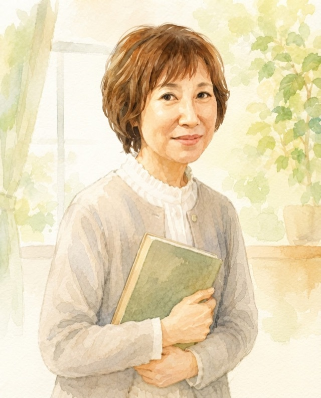
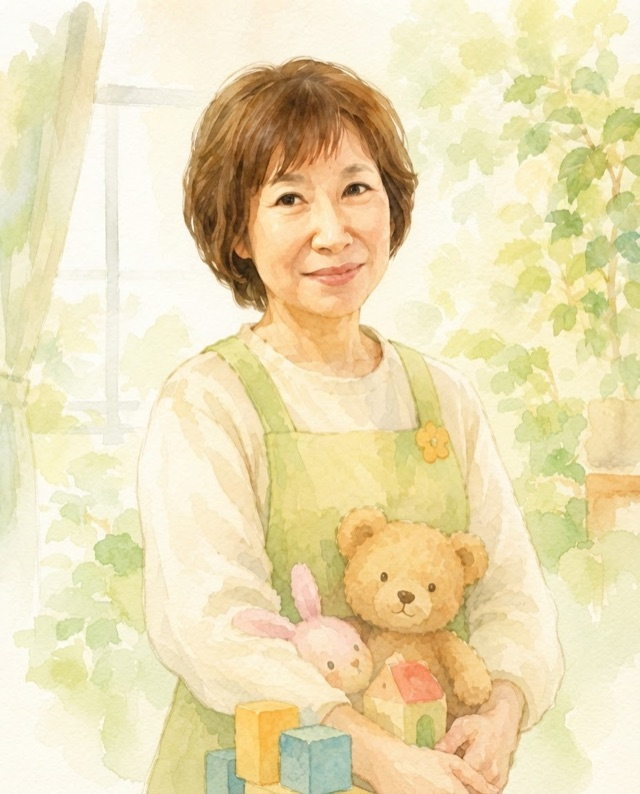

ふたりの物語
「健康」と「安心」、ふたつの専門性。
活動の中心にいるのは、シニアの一卵性双生児のふたり。団体名の「ツインズ」は、ここから生まれました。長い歳月をそれぞれの現場で歩んできたふたりが、いままた力を合わせて、まちの子育てを支えます。

こどもの「健康」を
SATOKO（仮・担当分け要確認）
大学で小児看護を教える教授として、こどものからだと心の健康を長年見つめてきました。医療と家庭のあいだに立ち、専門的な知見でご家族を支えます。

こどもの「安心」を
Aちゃん（仮・担当分け要確認）
保育の現場ひと筋、保育園の園長として、数えきれないこどもたちと家族の毎日に寄り添ってきました。培った経験で、安心できる居場所をつくります。
看護学の知と、保育の実践知。
ふたつがそろっているから、こどもの育ちをまるごと支えられる。
※お二人の画像はイラストによる仮のものです。実際のお写真に差し替え予定です。